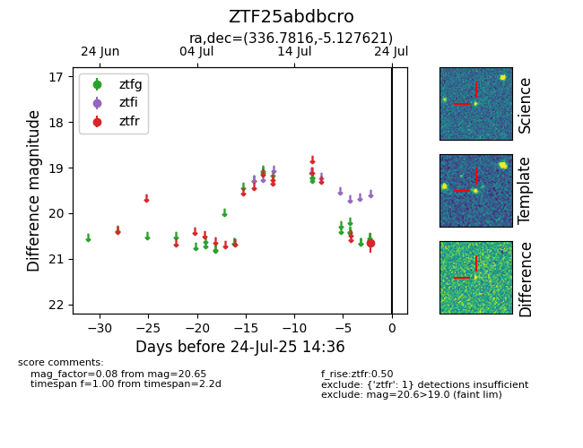

Target ZTF25abdbcro at 2025-07-24 14:36, see:
FINK: fink-portal.org/ZTF25abdbcro
Lasair: lasair-ztf.lsst.ac.uk/objects/ZTF25abdbcro
ALeRCE: alerce.online/object/ZTF25abdbcro
alt names
ZTF25abdbcro (ztf,fink)
coordinates:
equatorial (ra, dec) = (336.7816,-5.12762)
galactic (l, b) = (59.0461,-49.21611)
photometry
last ztfr=20.65
1 ztfr detections
